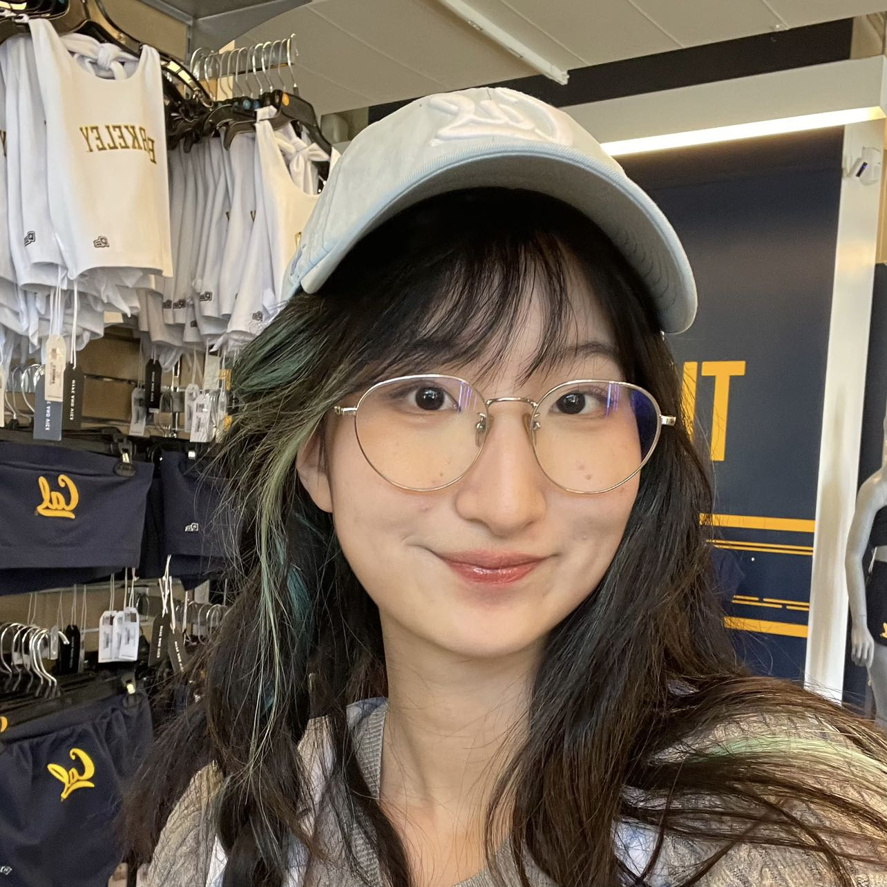
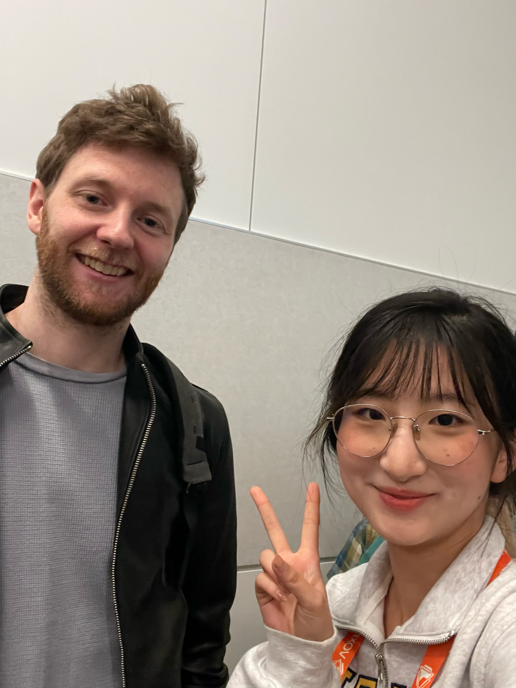
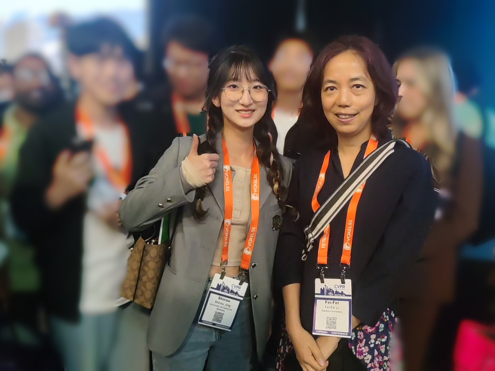
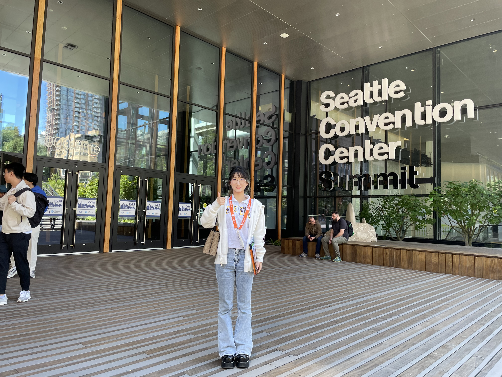

|
Shirou Jing I'm a junior year student at University of Chinese Academy of Science in Beijing, majored in computer science, where I cooperate with Zhenliang He and Prof. Shiguang Shan in Diffusion based Video generation. I'm also an exchange student at UC Berkeley, where I intern in ABC lab, founded by Eric Betzig, advised by Xiongtao Ruan and Srigokul Upadhyayula, working on AI for microscopy image analysis. |
 |
{kind=link}
Research ExperienceMy research journey has been driven by a passion for leveraging computer science and AI to innovate solutions that intersect with human needs. From early inspirations in science literature to hands-on experiences in high-tech startups and prestigious research institutions, my academic path has been marked by a deep exploration of generative models, human-computer interaction, and the practical applications of AI. My fascination with science began in childhood, sparked by books like "Horrible Science" and "Horrible Maths." This early interest evolved during a six-month visit to OSU, where I constructed a toy rocket that ignited my curiosity in practical science applications. In high school, my passion for computers grew as I excelled in informatics competitions, winning a provincial first prize. Entering university, I laid a strong foundation in mathematics and physics, which proved pivotal during a transformative summer internship at ZhenTec Intelligence. Here, within a pioneering startup incubated by Xi'an Jiaotong University, I developed a keen interest in human-computer interaction by contributing to the development of brain-machine rehabilitation robots.During subsequent years, my research interests expanded into diverse domains such as lip reading recognition, video forgery detection, and radar image processing. At Xi'an Jiaotong University, under the mentorship of Prof. Haixia Bi, I participated in a novel research on classifying Polarimetric SAR Images using diffusion models, achieving significant advancements published in IGARSS 2024. Motivated by the real-world challenge of tenosynovitis among lab mates due to extensive mouse use, I collaborated with Prof. Feng Tian and Prof. Wei Sun to design a game-based solution for rehabilitation. This endeavor resulted in a patent application and a paper accepted by IPCV, highlighting our innovative approach. My passion for generative models deepened during collaboration with Prof. Shiguang Shan and Zhenliang He at the Institute of Computing Technology. Securing substantial funding from China's inaugural open grant project for undergraduates underscored the potential impact of my work in advancing diffusion models' creative applications. An exchange visit to UC Berkeley was a pivotal experience that further refined my research trajectory. Engaging with AI-driven microscopy algorithms at the ABC lab, founded by Nobel laureate Eric Betzig, solidified my commitment to integrating AI with human needs. This exposure to cutting-edge technology in a world-renowned laboratory reinforced my determination to pursue advanced studies in AI. In summary, my research journey has been characterized by a quest for innovation at the intersection of AI and human-centered applications. As I embark on the next phase of my academic career, I am eager to contribute to groundbreaking research that addresses significant societal challenges through advanced AI technologies. My intrigue in generative models, particularly diffusion models, deepened during my summer research. In my junior year, I collaborated with Prof. Shiguang Shan and Zhenliang He at the Institute of Computing Technology, focusing on diffusion models' creative potential. Notably, I secured funding of RMB 67,000 from China's first open grant project for undergraduates, underscoring the significance and potential impact of my research. During my exchange visit to UC Berkeley, I brought my research questions and a strong curiosity about AI to CVPR, where I received guidance and encouragement from many experienced researchers. This experience solidified my determination to pursue further studies in AI.




|
Miscellanea |
Teaching |

|
GIGT: Gesture-Recognition-Integrated Game Therapy for Tenosynovitis
Ruiqi Gao*, Aleksander Holynski*, Philipp Henzler, Arthur Brussee, Ricardo Martin Brualla, Pratul P. Srinivasan, Jonathan T. Barron, Ben Poole* IPCV, 2024 project page / arXiv Developed an interactive game for tenosynovitis prevention using deep learning to accurately recognize and classify hand gestures, enabling customizable tendon sheath exercises through an engaging and user-friendly interface. |